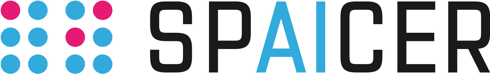

Welcome to alphailp’s documentation!
alphaILP is a neuro-symbolic framework that can learn generalized rules from complex visual scenes. alphaILP learns to represent scenes as logic programs—intuitively, logical atoms correspond to objects, attributes, and relations, and clauses encode highlevel scene information. alphaILP has an end-to-end reasoning architecture from visual inputs. Using it, alphaILP performs differentiable inductive logic programming on complex visual scenes, i.e., the logical rules are learned by gradient descent. [GitHub]
Introduction by Examples
We provide an introduction by giving specific examples of use cases of alphaILP.
Building a Reasoner : A brief introduction about how to build a differentiable reasoner
Building a Learner : A brief introduction about how to perform rule learning from visual scenes using alphaILP.
Compositional Test by Differentiable Reasoning : A demonstration of an use case of the differentiable reasoner as a compositional checker for industrial automation.
Acknowledgements
This project has been supported by SPAICER (01MK20015E) , TAILOR (952215), and AICO.
{kind=link}

{kind=link}
Contents:
- Building a Reasoner
- Building a Learner
- Compositional Test by Differentiable Reasoning
- Architecture Overview
- Valuation Functions
- Mode Declaration
- Acknowledgements
- src package
- Subpackages
- Submodules
- src.clause_generator module
- src.data_clevr module
- src.data_kandinsky module
- src.eval_clause_infer module
- src.facts_converter module
- src.infer module
- src.logic_utils module
- src.mode_declaration module
- src.neural_utils module
- src.nsfr module
NSFReasonerNSFReasoner.atoms_to_text()NSFReasoner.clause_eval()NSFReasoner.forward()NSFReasoner.get_clauses()NSFReasoner.get_params()NSFReasoner.get_top_atoms()NSFReasoner.get_valuation_text()NSFReasoner.predict()NSFReasoner.predict_multi()NSFReasoner.print_program()NSFReasoner.print_valuation_batch()NSFReasoner.training
- src.nsfr_utils module
denormalize_clevr()denormalize_kandinsky()generate_captions()get_clevr_loader()get_clevr_pos_loader()get_data_loader()get_data_pos_loader()get_kandinsky_loader()get_kandinsky_pos_loader()get_nsfr_model()get_nsfr_model_train()get_prob()get_prob_by_prednames()save_images_with_captions()to_plot_images_clevr()to_plot_images_kandinsky()update_initial_clauses()update_nsfr_clauses()valuation_to_attr_string()valuation_to_rel_string()valuation_to_string()valuations_to_string()
- src.optimizer module
- src.percept module
- src.predict_clevr module
- src.predict_kandinsky module
- src.refinement module
RefinementGeneratorRefinementGenerator.add_atom()RefinementGenerator.add_attribute_atom()RefinementGenerator.add_relation_atom()RefinementGenerator.apply_func()RefinementGenerator.generate_new_variable()RefinementGenerator.generate_term_combinations()RefinementGenerator.get_max_obj_id()RefinementGenerator.refine_from_modeb()RefinementGenerator.refinement()RefinementGenerator.refinement_clause()RefinementGenerator.subs_const()RefinementGenerator.subs_var()
- src.tensor_encoder module
TensorEncoderTensorEncoder.body_to_tensor()TensorEncoder.build_I_c()TensorEncoder.build_fact_index_dic()TensorEncoder.build_head_unifier_dic()TensorEncoder.encode()TensorEncoder.facts_to_index()TensorEncoder.generate_subs()TensorEncoder.get_fact_index()TensorEncoder.get_max_subs_num()TensorEncoder.pad_by_true()
- src.torch_utils module
- src.train module
- src.train_cnn module
- src.train_cnn_clevr module
- src.train_sa_mlp_clevr module
- src.train_yolo_mlp module
- src.valuation module
- src.valuation_func module
SlotAttentionColorValuationFunctionSlotAttentionFrontValuationFunctionSlotAttentionInValuationFunctionSlotAttentionLeftSideValuationFunctionSlotAttentionMaterialValuationFunctionSlotAttentionRightSideValuationFunctionSlotAttentionShapeValuationFunctionSlotAttentionSizeValuationFunctionYOLOClosebyValuationFunctionYOLOColorValuationFunctionYOLOInValuationFunctionYOLOOnlineValuationFunctionYOLOShapeValuationFunction
- Module contents